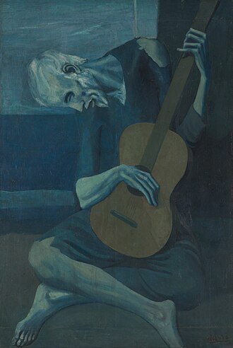

Pablo Picasso


![Mona Lisa or La Gioconda c. 1503–1516,[d 8] Louvre, Paris](/img/Mona_Lisa.jpg)

![Lady with an Ermine, c. 1489–1491,[d 6] Czartoryski Museum, Kraków, Poland](/img/Lady_with_an_Ermine.jpg)



The Old Guitarist (1903), Art Institute of Chicago
X
Parade, 1917, curtain designed for the ballet Parade. The work is the largest of Picasso's paintings. Centre Pompidou-Metz, Metz, France, May 2012
X
Pablo Picasso, 1921, Three Musicians, oil on canvas, 200.7 × 222.9 cm, Museum of Modern Art, New York. Mrs. Simon Guggenheim Fund
X
Mona Lisa or La Gioconda c. 1503–1516,[d 8] Louvre, Paris
X
Presumed self-portrait of Leonardo (c. 1510) at the Royal Library of Turin, Italy
X
Lady with an Ermine, c. 1489–1491,[d 6] Czartoryski Museum, Kraków, Poland
X
The Starry Night, June 1889. Museum of Modern Art, New York
X
Still Life: Vase with Fourteen Sunflowers, August 1888. National Gallery, London
x
Café Terrace at Night, 1888. Kröller-Müller Museum, Otterlo" width="100" class="thumbnail
x